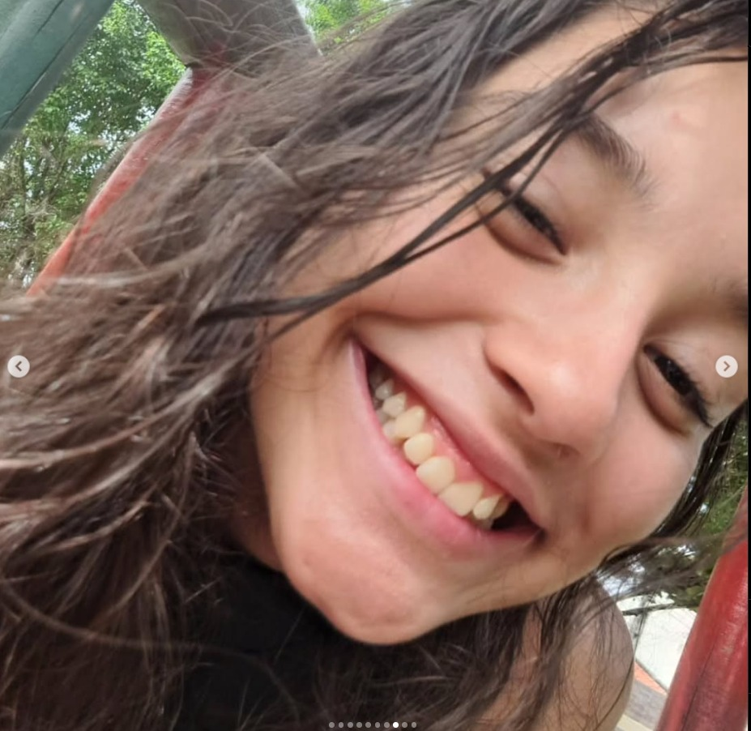
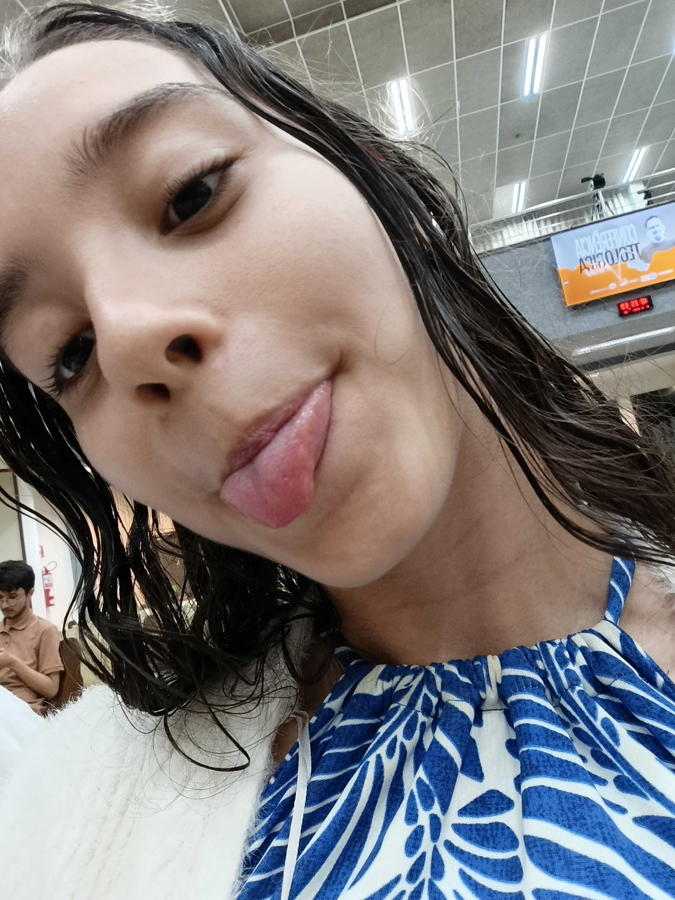

TEMPO SEM FALAR COM VOCÊ
123
HORAS
|
01
MINUTOS
|
41
SEGUNDOS
5 DIAS
Clique para iniciar
Oi, sou eu depois desses dias todos. Não sei quantos dias passaram, mas estou escrevendo hoje com 5 dias sem
a gente se
falar. E sinceramente, que saudade! Mudei o cabelo, o jeito de se vestir, o jeito de pensar, mas não mudo o
meu
sentimento por você. Agora tá mais saudável, graças a Deus. Coloquei a opção de pausa só pra você poder
ler(eu não
esqueci kkkkkkk).
Antes que eu me esqueça: feliz aniversário! Você merece muito, gatinha. Que Deus te abençoe mais e mais. Eu
sou muito
sem coração de te mandar isso aqui no fim do dia, kkkkkkkkk, mas é pra você ficar com mais saudade de mim.
Não sei se
tá, mas eu tô, e muito! Não sei como tô aguentando.
Queria dizer que eu tô melhorando em tudo. Acho que tava viciado em você, e essa escolha me fez bem, mas
ainda tô com
saudade. E é difícil manter. Queria pedir desculpa por falar que você me dava migalhas. Foi uma falta de
respeito total
eu falar que seu jeito de me amar eram migalhas. Mesmo que seja brincadeira, foi rude da minha parte. Ah, e
o que eu
falei de você e da sua mãe também... Me perdoe. Eu tô aprendendo a pensar antes de falar, aprendendo a
pensar antes de
agir. Aprendendo a ser mais paciente e aprendendo a mudar de verdade. Não só porque eu quero que você seja
minha, mas
porque eu tenho que fazer como cristão.
Pode não parecer, mas eu prestei atenção quando você falou que Jesus estaria comigo. Eu só não dei corda
porque, você
sabe, eu não tava muito bem. Mas agora eu tô sério. Eu tô amando a Cristo como nunca, fazendo devocional.
Esses dias, tô
diminuindo bastante a vontade de me masturbar. Ainda fiz besteira esses dias, mas eu tô melhorando de
verdade.
Mas chega de falar de mim. Sabe, lembra que eu falei que ia postar essa foto sua no seu aniversário?
Promessa é dívida
comigo: a gatinha de A Fuga das Galinhas!
Agora, vamos conversar com a advogada!
À Mui Digna Senhora Debora, Advogada e Serva de Cristo,
Saúde e paz vos sejam concedidas. Escrevo-lhe com o coração cheio de admiração, pois, ainda que muitos
houvessem dito
que vos faltava competência e que a academia vos afastaria do caminho divino, eis que TU POREM estais aí,
não apenas
como prova viva de que se pode triunfar na advocacia e dedicar-se inteiramente aos estudos, mas também de
que é possível
buscar a Deus com mais fervor do que nunca.
Quando todos afirmavam que os estudos vos desviariam da fé, TU POREM continuastes a pregar a Palavra, tal
como Paulo,
que, mesmo entre os doutos e os céticos, jamais se calou. Isso me enche de assombro, pois não compreendo
como pode
existir alguém como vós. Se tendes algum defeito, certamente são os vossos pés, pois, quanto ao mais, nada
se pode
apontar.
Anseio viver e aprender mais do Evangelho convosco. Quer vos chamem advogada, doutora, filha ou pregadora,
pouco
importa. Pregai a Palavra, vivei vossos sonhos, sede instrumento nas mãos de Deus, e que toda a vossa vida
proclame que
sois Sua filha dedicada. Não sejais como aqueles que duvidaram; TU POREM sereis diferente e vivereis o
Evangelho de
Cristo, seja qual for vossa profissão ou situação. Por isso, crescei e mostrai a todos até onde o Senhor vos
conduzirá.
Que a graça divina vos acompanhe sempre.!
Agora, vamos conversar com a menina q eu me apaixonei
Tambem tem essa aq q eu amo
Agora essa q eu sinto saudade
Agora sem texto corrigo, so eu sendo eu. Débora,não importa qnts fotos bonitas eu mostre aq, qnts declarações
eu faça, ou qnt tempo eu fique afastado de vc, ou qnts
declaraçoes eu faça sla, esse relogio so mostra q qnt mais tempo passe mais eu vou gostar de vc, e eu
realmente te amo e
isso tava machucando a ambos.
eu penso em 1 filemon 15-16:
"É possível que ele tenha sido separado da tua companhia por algum tempo, a fim de que pudesses reavê-lo
agora e para
sempre, não mais na condição de escravo; aliás, muito melhor do que escravo, como irmão amado,
particularmente por mim,
e ainda mais por ti, tanto como amigo pessoal, quanto como cristão!"
Gostaria mt de pensar q a gente se afastou pra dps um dia a gente voltar mas eu n posso viver pensando
nisso, eu n posso
endeusar vc, eu n posso so esperar vc, eu so quero correr o risco de perde toda minha vida pra cristo.
quero q meu envolvimento chegue ate o pesçoco, nem q eu perca alguns amigos, aquela tao desejada promoção na
minha
carreira. vai ter algumas vezes q isso vai bagunçar minha cabeça e eu vou ter q configurar minha postura ate
nao saber
qm sou eu e qm é Cristo, onde Cristo começa em mim e ate onde eu vou em Cristo.
sim eu to citando a musica "desenvolvimento" do marco telles pq vc me viciou, vc me deixa com vontade de
conhecer mais
de Cristo vontade de saber oq ta na sua cabeça, oq ta no seu coração, como cristo se manifesta em vc, e se é
possivel
ele fazer o msm comigo.
eu quero transborda pela graça assim como vc faz, ser salvo de vdd nao mais escravo, eu quero viver em
cristo e se pra
isso eu tenha q perde vc, me desculpa mas eu te renuncio!
eu quero ter essa experiencia sem aguas ate o joelho eu quero me afogar em cristo nao ser mais eu mas cristo
viver em
mim, e esse é meu mais sincero objetivo.
Dito isso se vc chegou ate aq eu tenho um presente clica la em cima no DHLP dps q vc terminar aq.
Eu te amo vc é minha musa, minha inspiração, sei q nao da pra viver so de amor, mas eu vou viver so pelo
amor e pela
graça de Cristo e se um dia vc tiver pronta eu vou ta aq e esse relogio vai continuar contando o dia q a
gente se
separou ate o dia q a gente voltar.
ent pfvr volta e vamo partilhar da graça de Cristo, assim como Cristo amou a igreja q a gente possa viver
esse amor.
eu havia feito um vlog se vc quiser me pede mas eu não esqueci seus presentes so nao chegaram ainnda
sinto mt sua falta, mas não vou deixar de orar por vc nunca, nunca, nunca. Vc tem pra sempre um lugar no meu coração e
lembrei vc me viciou nas pregações do Rodrigo Bipo mds q incrivel eu nunca tinha conhecido a Deus assim obgd msm.
Saiba q eu escolheria você msm se eu estivesse no outro lado do mundo, com centenas e milhares de pessoas, mesmo se eu estivesse cheio
de novas oportunidades eu escolheria vc, escolheria vc hj, vc amanha, daqui a 20 anos, em outro planeta, outro seculo, eu ainda ia escolher vc.
Van Gogh ou de mim se
fosse tão facil assim, se fosse uma cena de filme, 365 days nao é elien?, mas a gente ta mais pra la la lend kkkk, Eu te amo e sei q n é so isso q basta mas ja tava machucando vc
tao proxima e ao msm tempo não ter vc,mas eu tinha q fazer isso.
a parti do "vlog" eu escrevi hj no seu aniversario, sao 1:51 e eu n consigo dormir pensndo em vc e se eu fiz o certo, mas q Deus cure meu coração não quero
te colocar acima dele, nunca msm fica bem linda, vc é de longe a pessoa q eu mais amei msm sem ter beijado, espero q a gatinha tenha sucesso e tenha aproveitado o dia
eu te amo branquela,gatinha, princesa, rapunsel, insuportavel, fedorenta, perfeita, pentecostal, "presbiteriana", magrela, espero q se vc o proximo q se apaixonar pro vc
nao seja igual eu, q nao goste de vc so pelos seus bicpes imensos, tenho q confessar q nao resisto sao gigantes, e seus joelhos? de outro mundo, q o proximo te ame so pelo q vc é,
e acredite vc é incrivel e vc sabe. Acho q é isso nao tenho mais oq falar eu te amo, e sempre vou amar ne fazer oq vc é inesquecivel, queria mt q tivesse sido vc, mas
nao vou focar nisso, no fundo vou esperar mas talvez nao aconteca, "entao vamos viver q um dia a gente se encontra"(Um dia a gente se encontra-CBJR)e eu realmente " eu espero te reencontrar numa bem melhor
cada um tem seu caminho, eu sei foi até melhor,rmãos do mesmo Cristo, eu quero e não desisto, caro pai, como é bom ter por que se orgulhar, a vida pode passar, não estou sozinho"(Lugar ao sol- CBJR)
De Natan Andrew Santiago de Melo,
Para, Debóra Helen Lima Passos
PS: Clica no DHLP no topo em cima do RELOGIO e ouve a musica enquanto ve o tempo passar igual eu faço.
Carregando vídeo...